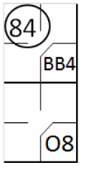
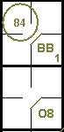

action { batter -> 1B6 }

These are errors whose effects are cancelled out by the same fielder or a team mate; in other words, the defense succeeds nevertheless in forcing a putout. These errors are consequently not scored against the person who committed them, and are therefore not recorded with any symbol on the score-sheet. They do, however, determine the continuity of play in double or triple plays.
NO ERROR IS, according to rule 9.12(d) of the OBR charged against (these are the “exempted errors”):
Example 76:
The batter hits a deep ground ball to the short-stop who recovers it and bungles his throw to first base.
The official scorer judges that, even if the throw had been perfect, the batter-runner would nevertheless
have reached first base safely, and he is awarded a hit.
No errors are charged, because the wild throw had no effect on the outcome of the action.
| WBSC | Translation in the scoring tool | Tool |
|---|---|---|
|
|
/* The batter hits a ball toward the short-stop, who doesn't control the ball.
The scorer judges it a hit because, even without an error, it would have been a hit. */ action { batter -> 1B6 } |
|
Example 77:
With a runner on first base, the batter hits a fly ball to the center fielder, who muffs the catch but
recovers the ball in time to put out the runner by throwing to second base.
In this case no error is charged, as the fielder recovered the ball in time to put out the runner in a
force play, and the misplay had no effect on the outcome of the play.
| WBSC | Translation in the scoring tool | Tool |
|---|---|---|
|
 |
/* The first batter arrives on base on a 'base on ball' */ action { batter -> BB } /* The second batter hits a fly ball to center field, which is dropped by the center fielder. Due to his error, the fielder recovers the ball and throws it back to the second baseman to get the runner out. */ action { batter -> O8 , runner1 -> 84 } |
 |
Example 78:
With a runner on first and a runner on second, the batter hits a fly ball to the center fielder, who muffs
the catch. The right fielder, standing close by, picks up the ball in time to put out the runner from first by
throwing to second base. The runner from second base advances to third base in this play.
In this case we charge the right fielder with the assist and the second baseman with the put out. As the
advance of the runner from second to third was made only for the muffed catch of the ball, an extra base error
will be charged to the center fielder. Write a note on the score-sheet to explain this
| WBSC | Translation in the scoring tool | Tool |
|---|---|---|

|
/* The first batter arrives on base on a 'base on ball' */ action { batter -> BB } /* The second batter is hit by a pitch, he reaches first base, the runner advances */ action { batter -> HP , runner1 -> + } /* The batter hits a fly ball to right field, the fielder drops the ball. The right fielder recovers the ball in time and throws it to the second baseman to get out the runner coming from first. */ action { batter -> O8 , runner1 -> 94 , runner2 -> e8 } |

|
Example 79: with a runner on third base and less than two out, the batter hits a foul fly to the left field. The left fielder deliberately drops the ball, to prevent the runner from third to score after the catch. The batter remains at bat, without the scorer writing down the 'catching error'
| WBSC | Translation in the scoring tool | Tool |
|---|---|---|

|
/* The first batter hits a triple to right field */ action { batter -> 3B9 } /* The second batter hits a fly ball to left field in the foul zone. The fielder prefers to drop the ball to prevent the runner from scoring a run. */ |

|